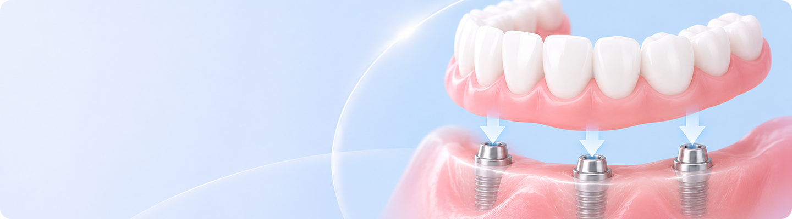
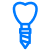
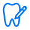

틀니 임플란트란?
최소 2~5개의 임플란트만 식립하여 틀니와 임플란트를 똑딱이 단추와 같은,
특수한 장치를 통해임플란트와 틀니를 연결해서 사용하는 틀니입니다.

일반 틀니보다 움직임을 줄여
식사와 일상생활을 편하게할 수 있도록 도와줍니다.
이런경우 틀니 임플란트를 고려할 수 있어요
-
 틀니 사용감이 불만족스러운 분
틀니 사용감이 불만족스러운 분
-
비용적인 부분에서 부담을 느끼시는 분
-
일반 틀니를 사용할 수 없는 분
-
잇몸뼈 흡수로 어려움이 있는 분
틀니 임플란트 치료과정
-

- 상태 진단
- 잇몸과 잇몸뼈 상태를 확인하고,
식립 계획을 수립합니다.
-

- 임플란트 식립
- 잇몸뼈에 임플란트를
식립합니다.
-
- 골유착 및 회복
- 임플란트와 잇몸뼈가
결합하도록 회복합니다.
-
- 연결 장치 부착
- 임플란트에 연결 장치를
부착합니다.
-

- 제작 및 조정
- 구강에 맞춰 틀니를
제작하고 조정합니다.
-

- 장착 · 점검
- 틀니를 장착하고
고정력과 교합을 확인합니다.
-
- 상태 진단
- 잇몸과 잇몸뼈 상태를 확인하고
식립 계획을 수립합니다.
-
- 장착 · 점검
- 틀니를 장착하고,
고정력과 교합을 확인합니다.
※ 치료 과정과 소요 기간은 개인의 치아 상태에 따라 달라질 수 있습니다.
틀니 임플란트 치료 후 주의 사항
-
- 01 금연 · 금주
- 음주와 흡연은 상처 회복을 늦추고 염증 위험을 높일 수 있으므로, 수술 후에는 삼가주세요.
- 02 올바른 지혈 관리
- 수술 후에는 의료진의 안내에 따라 거즈를 물어 지혈해주시고,
침을 세게 뱉거나 빨대를 사용하는 행동은 피해주세요.
- 03 과도한 신체 활동 주의
- 수술 후에는 찜질방, 사우나 및 격렬한 운동을 피해주시고,
충분한 휴식과 안정을 취해주세요.
- 04 수술 부위 청결 유지
- 수술 부위를 혀나 손가락으로 만지지 마시고,
의료진의 안내에 따라 구강을 청결하게 관리해주세요.